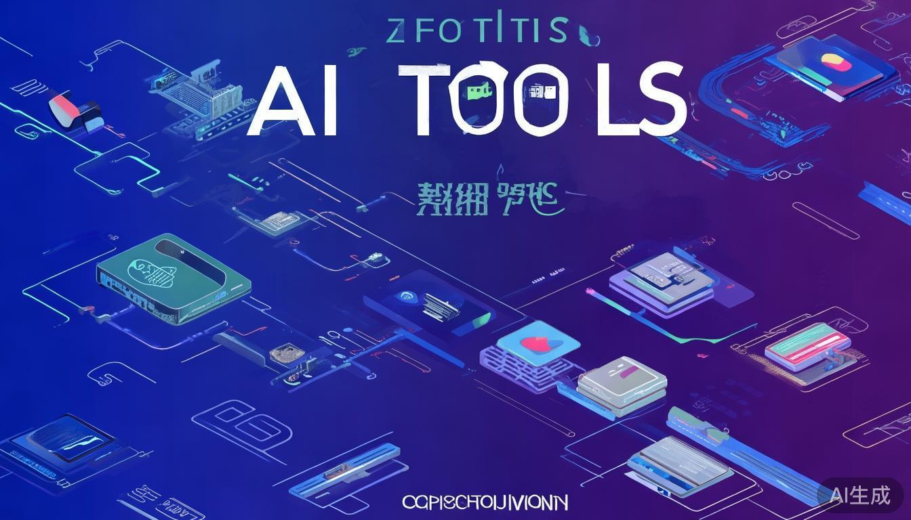

AI 工具全景图（国内 + 国外，2026 版）
怎么看这张图
按「你要做什么」分六大类。小白不需要每个都用，每类先掌握 1 个就行，用到哪类再深挖。
1. 对话 / 写作（最核心，先学这个）

- 国外：ChatGPT（GPT-5.4 系列）、Claude、Gemini
- 国内：DeepSeek、豆包、通义千问、文心一言、智谱
能干什么：写文案、改稿、翻译、总结长文、头脑风暴、做选题。
小白首选：DeepSeek（便宜 + 中文强）或 ChatGPT。
2. 图像生成
- 国外：Midjourney（美术质感天花板）、Flux（开源）、DALL-E、NanoBanana Pro
- 国内：即梦、可灵、腾讯混元绘图、通义万相
能干什么：配图、封面、海报、头像、漫画、产品图。
小白首选：即梦 / 可灵（国内注册方便，出图也快）。
3. 视频生成
- 国外：Sora、Veo、Runway
- 国内：可灵（Kling 3.0）、剪映（剪辑 + AI 一站式）
能干什么：文生视频、图生视频、数字人、配音、剪辑。
小白首选：剪映 + 可灵（剪辑和 AI 生成都覆盖）。
4. 编程 / IDE（详见 04 号文）
- 国外：Cursor、Windsurf、GitHub Copilot、Claude Code、Codex、Gemini CLI
- 国内：通义灵码、腾讯云 AI 代码助手
能干什么：让 AI 帮你写代码、改 bug、做网页、做小程序。
小白首选：Cursor（体验最好）。
5. 搜索 / 浏览
- 国外：ChatGPT Search、Perplexity、Gemini
- 国内：秘塔 AI 搜索、夸克、豆包
能干什么：联网查最新资料、做调研、找案例、核实信息。
小白首选：秘塔 / Perplexity（带来源，好核实）。
6. 审阅 / 校对 / 效率
- 代码审阅：CodeRabbit、GitHub Copilot Code Review
- 文字审阅：Grammarly、秘塔写作猫、各类 AI 校对
- 办公效率：Notion AI、WPS AI、飞书 AI、腾讯文档 AI
能干什么：给代码和文章「挑错」，帮做 PPT、表格、会议纪要。
国内 + 国外怎么搭配
一句话：用国外最强做「创意 / 代码」，用国内最方便做「分发 / 剪辑」，用 DeepSeek 做「性价比主力」。
免费 vs 付费
- 先用免费版把流程跑通。
- 等确定它能带来收益，再为一个工具付费。
- 警惕「订阅陷阱」：很多工具自动续费，记得去设置里关掉或做提醒。
下一步
- 想写文章 学 DeepSeek 提示词
- 想做视频 剪映 + 可灵
- 想建网站 Cursor
一次只推进一条线，不要同时开太多。
2026-08-24 · 今日 AI 进展
2026-08-24 · 今日 AI 进展
截至2026年8月24日，全球AI工具赛道的格局延续"基础模型层收敛、应用层垂直分化"的主线，国内与海外市场的差异化定位进一步清晰。海外侧，OpenAI、Anthropic、Google DeepMind三家的闭源大模型占据通用生产力工具的核心流量入口，当日值得记录的公开动态是Anthropic正式向全球免费用户开放Claude 3.5 Sonnet的200万上下文窗口权限，同时上线跨文档引用溯源功能，进一步降低长文本处理类工具的使用门槛，海外AI工具的竞争焦点已经从参数规模转向长上下文稳定性、多模态交互精度与企业级合规能力。
国内侧，当日百度文心一言、阿里通义千问、字节豆包均完成了月度功能迭代，核心更新集中在国产算力适配后的端侧模型落地：文心大模型4.0 Turbo端侧版本正式搭载于最新款国产安卓旗舰，离线状态下可支持文案生成、图片理解、文档摘要等核心功能，响应延迟较云端版本降低60%以上；通义千问则面向中小开发者开放了垂直行业工具的零代码搭建通道，覆盖电商客服、工业质检、教育备课三个高频场景，国内AI工具的普惠化落地速度明显加快，与海外工具形成了"云端高端能力+端侧普惠覆盖"的差异化竞争路径。
从当日的行业数据来看，全球AI工具的周活跃用户规模已经突破18亿，其中国产AI工具的海外市场占比较2025年同期提升12个百分点，短视频生成、跨境电商运营、小语种翻译三类工具的出海增速最为显著。对于《AI工具全景图-国内国外》章节的读者而言，当日的动态恰好印证了当前工具选型的核心逻辑：没有绝对通用的最优工具，需要结合使用场景、网络环境、数据合规要求、成本预算四个维度做匹配。
- 海外工具选型提示：Claude 3.5 Sonnet免费权限开放后，长文档处理、学术文献综述、代码重构类需求可优先选择该工具，注意企业用户需单独采购数据不训练的合规版本；
- 国内工具选型提示：涉及敏感数据、离线办公、国产系统适配的场景，优先选择已完成端侧落地的文心、通义、豆包端侧版本，数据无需上传云端即可完成处理；
- 出海工具使用提示：面向跨境业务的用户可重点关注当日上线的通义跨境运营工具包，内置多平台合规校验、小语种本地化润色、海外用户画像分析功能，适配主流跨境电商与内容平台规则。